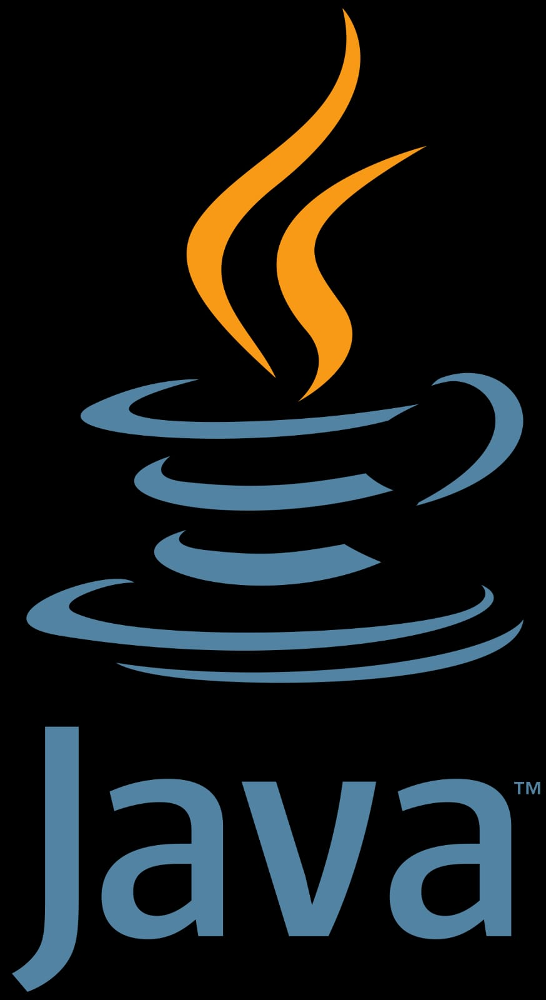
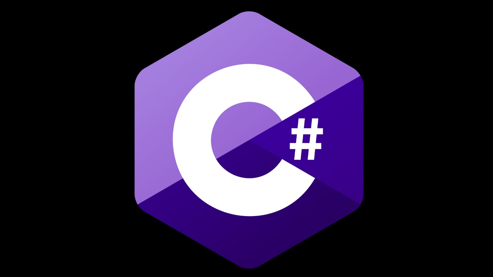
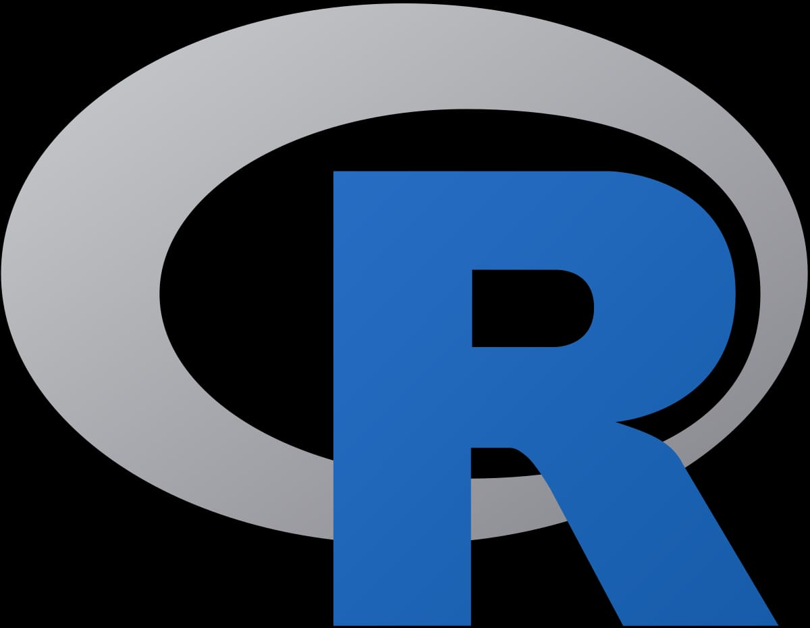

Nas aulas iremos aprender sobre Python, desde o básico até o avançado. O curso foi totalmente pensado na sua evolução, passo a passo, para você não aprender "só" os comandos do Python, mas aprender sem ficar decorando nada e aprender como criar uma linha de raciocínio para resolver os desafios reais das empresas por conta própria e de forma intuitiva.

Java
Java é um tipo de linguagem de programação criada e comercializada pela Sun Microsystems desde 1995. É definida como uma linguagem orientada a objetos. Sua intenção é permitir que os desenvolvedores escrevam o programa apenas uma vez e o executem por meio de qualquer dispositivo.

C#
C# é uma linguagem de programação orientada a objetos e orientada a componentes. C# fornece construções de linguagem para dar suporte diretamente a esses conceitos, tornando C# uma linguagem natural para criação e uso de componentes de software.

R
R é uma linguagem de programação estatística e gráfica que vem se especializando na manipulação, análise e visualização de dados, sendo atualmente considerada uma das melhores ferramentas para essa finalidade. A linguagem ainda possui como diferencial a facilidade no aprendizado, mesmo para aqueles que nunca tiveram contato anterior com programação.